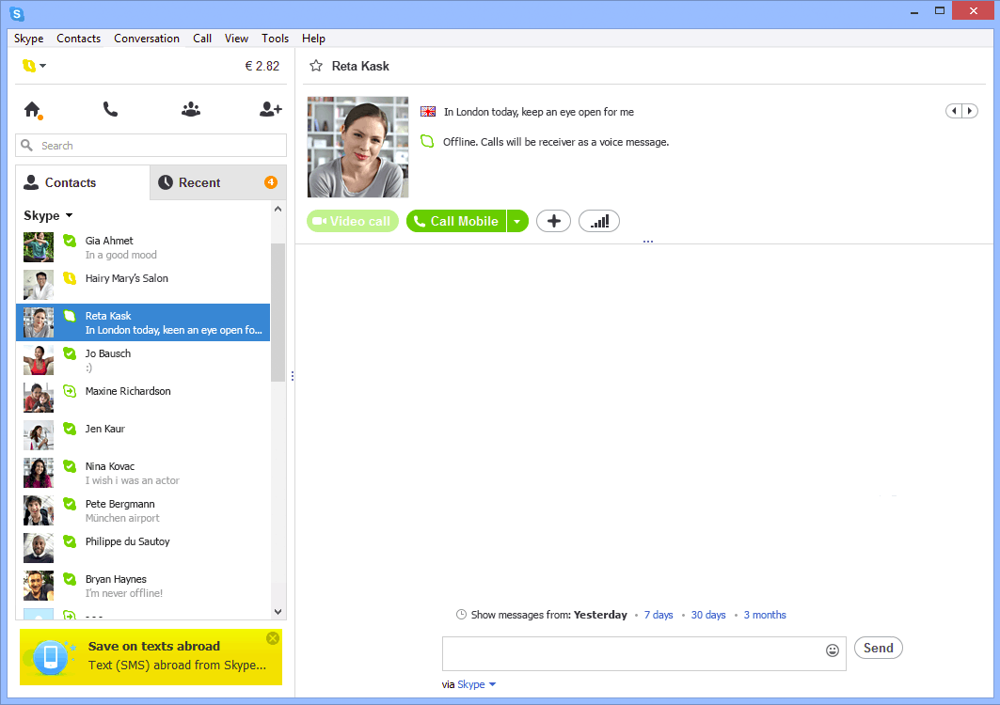
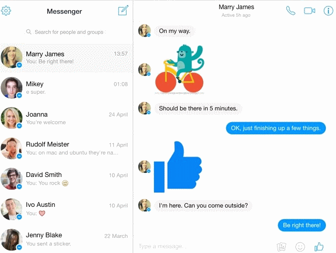

Skype
Puteți vorbi pe Skype online nu numai prin voce, așa cum se întâmplă în timpul unui apel telefonic, ci și prin chat sau o cameră Web. Pentru aceasta, trebuie îndeplinite următoarele condiții:
- Conexiune la internet stabilă.
- Interlocutorul trebuie să fie online.
- Ambii utilizatori au echipamentul necesar comunicării.
Cu aplicația de mesagerie instantanee Skype, puteți profita cu ușurință de caracteristicile de mai jos:
- Completați conversațiile cu reacții, GIF-uri, citate și altele
- Citați mesajul într-o fereastră de conversație pentru o urmărire mai rapidă în grupurile de chat
- Redirecționați mesajul într-o altă conversație și lucrați mai eficient
- Reacționați cu un emoji făcând clic pe fața zâmbitoare și alegând dintr-o gamă variată de reacții.

Apeluri folosind microfonul Utilizatorii pot discuta gratuit folosind un microfon dacă folosesc următoarele instrucțiuni:
- În meniul principal al messengerului există o filă „Apeluri”, pe care este disponibil butonul „Apel” cu simbolul „+”. Dacă interlocutorul a fost deja adăugat la lista de contacte, atunci trebuie să faceți clic pe acest buton.
- Se va deschide o listă de contacte disponibile, iar mai întâi Skype îi va sugera pe cei cu care ultima conversație a fost mai târziu decât precedentele. Abia în spatele lor, pe fila „Oameni”, se deschid toți interlocutorii. Trebuie să selectați unul sau mai multe dacă este vorba despre o conversație de grup făcând clic pe simbolul cerc din dreapta numelui sau poreclei utilizatorului.
- Utilizatorul a fost adăugat la lista selectată. Pentru a efectua un apel, trebuie să faceți clic pe butonul „Apelați”.
- Din lista derulantă selectați din nou butonul „Apel”.
Apel video
Comunicarea gratuită pentru utilizatorii Skype este disponibilă și prin intermediul unei camere web. Funcția de conversație video vă permite să înlocuiți comunicarea live a persoanelor atunci când nu se pot întâlni personal. Notă! Cel mai convenabil este să utilizați funcția de conversație video de pe un laptop, deoarece are o cameră web încorporată și abonatul nu trebuie să cumpere dispozitive suplimentare.
Instrucțiuni detaliate:
- Mai întâi trebuie să selectați un utilizator așa cum se arată în prima instrucțiune. Dar făcând clic pe butonul „Apel”, deja veți selecta butonul „Apel video”.
- Pentru a gestiona apelul, sunt deschise funcțiile de dezactivare a sunetului microfonului, a camerei web și a încheierii apelului. În același timp, utilizatorul poate vedea în fundal o imagine de pe camera sa.
- Dacă cel de-al doilea abonat este offline, atunci Skype vă va oferi să trimită un mesaj instantaneu în care puteți preciza esența apelului. Când utilizatorul intră în messenger, va vedea apelurile pierdute și SMS-urile.

Viber
Utilizează conexiuni WiFi sau 3G pentru comunicare. Printre avantajele Viber, se poate evidenția posibilitatea de a efectua apeluri gratuite în calitate HD, organizarea de conferințe cu mai mulți utilizatori, primirea notificărilor de apeluri, trimiterea de emoticoane și alte elemente grafice, păstrarea unui istoric de apeluri și multe alte funcții utile. Viber vă permite, de asemenea, să schimbați mesaje instant SMS. Aplicația are destul de multe funcționalități, dar nu trebuie să înveți toate caracteristicile pentru a începe cu succes. Pentru a-l folosi, este suficient să înțelegeți setul de bază de funcționalități pentru corespondență și efectuarea de apeluri. În Viber pentru gadgeturi mobile, butoanele „Conversație” și „Apeluri” sunt situate în partea de jos a ecranului. Mai sunt încă două butoane „Explorare” și „Mai mult...”.
| Secțiunea Viber | Caracteristici cheie |
|---|---|
| Conversații (chat) | Secțiunea este destinată corespondenței cu alți utilizatori Viber. În acesta, puteți trimite un mesaj text, vocal, foto sau video interlocutorului dvs. Aici puteți crea, de asemenea, conversații de grup, adăugând mai multe persoane la conversație. |
| Apeluri | În această secțiune, puteți apela gratuit alți utilizatori ai messengerului prin voce sau video. Dacă aveți bani în cont, puteți discuta la tarifele Viber Out cu abonații care nu au Viber instalat. |
| Explorare | Acces la pachete de stickere, comunități, roboți, știri și recomandări de la Viber și partenerii săi. |
| Mai mult | Această secțiune conține un magazin de stickere, setări, informații despre tarifele Viber Out, funcția de adăugare a unui contact, descriere și suport. |
Pentru a suna pe cineva, urmați acești pași:
- Accesați fila „Apeluri”.
- Atingeți contactul interlocutorului care vă interesează.
- Pentru un apel vocal, faceți clic pe „Apel gratuit”, pentru un apel video - pe apelul video.

Facebook Messenger
Facebook Messenger este o aplicație de comunicare cu prietenii și familia și este de asemenea axată în mod special pe mesaje Facebook. Această aplicație îți permite să trimiți mesaje vocale, să adaugi și să partajezi fotografii, să trimiți mesaje individuale sau de grup, inclusiv locația ta și accesul la multe opțiuni extra și emoticoane.
Pentru a comunica rapid cu prietenii, familia, toți deținătorii de conturi Facebook folosesc Messenger – un program special pentru organizarea corespondenței și a dialogurilor, care este disponibil atât în browser, cât și ca aplicație separată pentru smartphone.
Pe 8 aprilie 2015, Mark Zuckerberg a prezentat mult așteptata versiune web a messengerului.
Acum puteți schimba mesaje într-o fereastră separată a browserului fără a vă pierde timpul citind în paralel fluxul de știri Facebook. Versiunea web este complet gratuită și este folosită de oricine are o pagină personală de Facebook.
Acest ansamblu al popularului program de comunicare a depășit deja serviciile de browser de la Telegram și Whatsapp în ceea ce privește numărul de vizite zilnice.
Funcțiile Messenger în browser
Cu o mare probabilitate, programul va deveni principalul tău mijloc de comunicare cu toți prietenii și colegii tăi:
- comunicare ușoară cu alți utilizatori prin chat, puteți trimite unul altuia, fotografii, link-uri către postări interesante, note;
- vizualizați starea trimiterii și livrării mesajelor. În timp real, poți afla dacă interlocutorul ți-a citit mesajul;
- apeluri video. Munca lor este o surpriză plăcută, acum conversațiile video de înaltă calitate în HD pot fi efectuate nu numai folosind Skype, ci și pe Facebook;
- partajarea rapidă a fotografiilor și videoclipurilor. Puteți lansa camera direct în fereastra programului. Captați un moment important și trimiteți-l interlocutorului;
- etichete (stickere) gratuite. În modul de chat, vă sunt disponibile un număr mare de emoji-uri și stickere. În noua versiune de messenger, dezvoltatorii au adăugat o funcție de căutare pentru stickere. Acum este suficient să introduceți numele emoticoanei sau acțiunii pentru a obține cel mai potrivit sticker;
- suport al dialogurilor sincrone. Chat cu mai mulți prieteni în același timp. Dialogurile sunt, de asemenea, foarte utile pentru organizarea comunicării între colegi;
- trimiterea de bani. Aceasta este o caracteristică nouă care este în prezent în pre-testare. Numai rezidenții din Statele Unite pot folosi transferul de bani folosind Facebook;
- interacțiunea cu roboții net care vă pot scrie în scop de publicitate, corespondență în masă;
- salut rapid. Pentru a începe să conversați prin chat în messenger, trimiteți la Facebook unui alt utilizator folosind o tastă specială de dialog.
